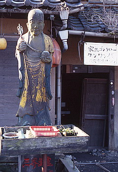

篠栗の南蔵院に行く途中見つけた奇妙な物件。
最初は保冷トラックの壁面に吊された魚にギョッとして思わず車のブレーキを踏んだ。見れば、普通の魚だけでなく沢山の鮫や太刀魚、マンボウなどまでが吊されている。
確か九州の方には魚類の干物をお飾りにして家に下げるシャーギというのがあったような気がするが、その一種なのだろうか。
それにしても鮫やマンボウというのはちょっと凄すぎる。
ものすごい腐臭を堪えながらトラックの裏にまわり込む。するとそこにはわずか3坪ばかりだが異様に 濃い空間が待っていたのだ。
そこはセルフビルドによる露天の祭壇、とでもいったらよいのだろうか。貝殻や小石を繋ぎあわせた奇妙なるコンクリートの塊の中に小さな祠が奉ってあるのだ。
そしてその横には六地蔵の姿も。そしてその裏手にはバラック状の水産加工小屋が建物の廃材に埋もれるように建っている。
さらにその先には人が住んでいるのかいないのか良く分からない建物がある。その建物の前にも不気味なお地蔵さんがたっている。

その脇には犬がつながれている。ということは建物の中に人が住んでるのかあ、と思い玄関に近づくと軒先に下がる発砲スチロールの板に何か書いてある。
「初代の家主 甚七 八十次 貞治 無き者後はワンワン犬ゴンタ廊が家主様となり家を守っています。横の家にはめし使いの岡部××がいます」（原文ママ）
ガーン、衝撃の事実。ついに人間様が犬の召使になる時代がやってきた。
あ、玄関の貞治の表札の前にゴンタローの表札が、間違えない。つまりこの家は犬小屋なのかー！
ということは召使が住んでるのは、あの朽ちかけたバラックなのか・・・
で、家主ゴンタロー様にインタヴューを敢行。
「あのーここのお地蔵さんと祠についてちょっと聞きたいんですけどお・・・」
「ワン」
「そこのトラックの魚って、一体・・・」
「ワンワン」
という訳で結局、何の疑問の解決も得られずこの珍物件を後にするのであった。
珍寺大道場 HOME